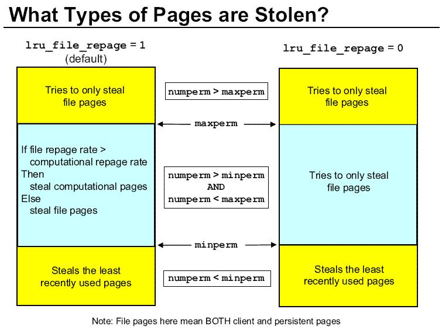

출처 : from IBM.kr thx
- < 변경 방법 >
==> lru_file_repage 값을 1 -> 0 으로변경
- vmo –p –o lru_file_repage=0
- ==>strict_maxclient 값을 1 -> 0 으로 변경
- vmo –p –o strict_maxclient=0
-
- < 권장 값 >
- 위 Parameter들 중, lru_file_repage 와 strict_maxclient 값만변경을 하면, Computational Memory의 부족으로 인한system performance 저하문제는 해결이 가능합니다.
- 추가적으로 위 값을 변경한 후에도paging space in/out 이 발생할 경우, minperm 값을 20 보다 작게 설정할 것을 권장드립니다.

The AIX "lru_file_repage" is a new memory tuning optionthat solves the
problem of having to limit JFS2 file cache to guarantee memory for applications
like databases. It is available starting with AIX 5.2 ML5 and AIX 5.3 ML2. It
can be set using the "vmo" command or via "smit tuning =>Memory".
Here's how it works.
AIX classifies memory into two categories: file cache and working storage.
Over time, memory use grows with both types of memory. AIX will eventually
need to free memory, and it can do so by freeing either file cache or working
storage. To maximize performance, you'd want AIX to release the type of
memory not being used by the application. So for databases, which use working
storage, you would want AIX to release file cache memory first. To do so in the
past, you would put a strict limit on JFS2 file cache memory using maxclient.
It is not unusual to see database servers with file cache limited to 15% oftotal
memory. However, a strict limit is not always desirable.
The new "lru_file_repage" option solves this problem. By setting"lru_file_repage=0",
AIX only frees file cache memory. This guarantees working storage stays inmemory,
and allows file cache to grow.
So in the past you might have set maxclient at 20% for database servers. Today
you could set maxclient at 90% and "lru_file_repage=0". The exact setting
will vary based on your application and amount of memory. Contact IBM Support
if you need help determining the optimum setting